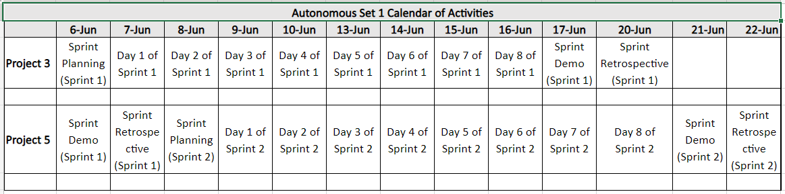
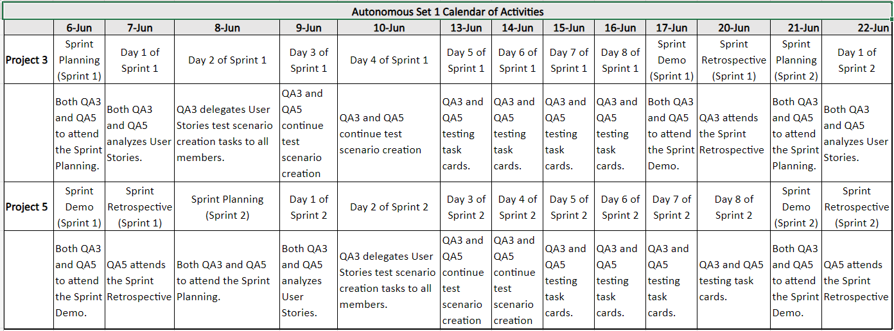

QA Division Team Structure
(Proposed New Composition)| Version | Date | Author | Change Status |
|---|---|---|---|
| Initial Draft | June 14, 2022 | Ria Janelle Skeet | Concept Draft |
| 0.1 | June 20, 2022 | Ria Janelle Skeet Maricar Asuncion |
Document Draft |
| 0.2 | June 21, 2022 | Ria Janelle Skeet Maricar Asuncion |
Updates about the groupings and timelines |
Introduction
You_Source’s QA Division comprises Quality Assurance Analyst/Engineer
currently
deployed to different projects currently classified as:
(1) Retainer/Maintenance Project,
(2)
Long-Term Project, and
(3) Swappable Project.
Ms. Ria Janelle Skeet is the QA Division Head.
And as of this writing,
the total number
of QAs is Sixteen (16), see below:
- John Seigfred Manzanares
- Averie Santiago
- Jerameel Calimon
- Jan Patrick So
- Sarah Kaye Agojo
- Charylie Auxtero
- Ruth Batucan
- Monica Christine Becong
- Raxzen Zorman Delos Reyes
- Miguel Carlito Bautista
- Zuriel Ocampo
- Kimberly Marqueses
- Bengie Dulay
- Duane Bryan Medina
- Joshua Patrick Garcia
- Maricar Asuncion
As part of the QA Division Team Structure improvement plan, the following new team composition is proposed:
OBJECTIVE
OBJECTIVEThe aim of the QA Division Team Structure’s new composition proposal is to create a sustainable process that promotes scalability.
Each of the Swappable Projects will be grouped together to form one autonomous set. All of these Autonomous Set of Swappable Projects needs to:
- Ensure that every Project has one SME QA and one Back-up QA.
- Implement one Azure (Kanban) board to monitor the process within the respective Swappable Project autonomous set.
- Make sure that QAs that belong to a specific autonomous project set are knowledgeable about the:
a. Application under test
b. Internal Standard Operating Protocols being implemented (within the Project) - Conduct Knowledge Transfer sessions within the project sets whenever possible and whenever
necessary.
a. Short-term goal: QA assignment rotation inside Swappable Project Autonomous Sets
b. Long-term goal: QA assignment rotation outside Swappable Project Autonomous Sets
PROPOSED NEW TEAM STRUCTURE
I. Definition of Terms
Autonomous Set: Refers to different Projects grouped together. It implies that the particular Set of Projects are independent from each other, thus the use of the word “Autonomous”.
SME QA: Subject Matter Expert QA or the Main QA in an Autonomous Set. Sometimes could be the Lead of the Autonomous Set
Back-up QA: QA who will serve as a Point of Contact in the absence of the SME QA or the Main QA. It is necessary to make sure that the Back-up QA is equipped with the knowledge and skills that the SME/Main QA does have.
II. Groupings of Project per “Autonomous Set”
1. Given the following Accountability Chart structure,
2. Each of the above Projects will be grouped together into autonomous sets:
3. Each of the Autonomous Set of Projects will have the following composition:
a. Autonomous Set 1
i. QA1 of P1 will be the SME QA of P1, while QA2 will be the Back-up QA of P1ii. QA2 of P2 will be the SME QA of P2, while QA1 will be the Back-up QA of P1
iii. QA3 of P3 will be the SME QA of P3, while QA5 will be the Back-up QA of P3
iv. QA5 of P5 will be the SME QA of P5, while QA3 will be the Back-up QA of P5
b. Autonomous Set 2
i. QA4 of P4 will be the SME QA of P4, while QA7 will be the Back-up QA of P4ii. QA7 of P7 will be the SME QA of P7, while QA4 will be the Back-up QA of P7
iii. QA6 of P6 will be the SME QA of P6, while QA4 will be the Back-up QA of P6
Note: For future expansion of Swappable Project group, two things can be an action item, each newly-added QA and/or Project will be:
iv. Grouped together to form a new Autonomous Set.v. Added to an existing Autonomous Set.
III. Role(s) of QAs on every “Autonomous Set”
1. Lead’s (of Autonomous Set) qualifications and responsibilities:b. Has a solid knowledge of all the project(s) that belong to his/her Autonomous Set.
c. Can closely keep track of the Sprint Schedule(s) for both (or all) the projects within his/her Autonomous Set.
d. Can effectively manage time given the multiple project assignments.
e. Can delegate task(s) to other QA members of his/her Autonomous Set.
f. Do monitor the progress of every task card on both (or all) the projects within his/her Autonomous Set.
g. Do send a comprehensive weekly report to the management about the current progress of the projects within the Autonomous Sets.
IV. QA Azure Board per “Autonomous Set”
-
Prerequisite steps:
- SME QAs fully onboarded the Back-up QA about the project’s process and application
- SME QAs should update the central repository of Calendar of Activities. In this way, all QAs (specifically those that belong to the same Autonomous Set) will be on the same page in terms of current Project Activities.
- Sample Calendar of Activities repository content:
- Sample Calendar of Activities with tasks content:
 -
Process flow of Azure Board updating and monitoring
For every Autonomous Set from the example above, one Azure Board will be assigned.- Every work item in Excel is linked to a particular task card in Azure Board
- The task(s) that the QA will be working on, can be from any of the Projects that belong to that particular Autonomous Set.
-
Process flow of Test Case Creation
< insert actual process to be done and screenshots from Ms. Ria and Bengie>
Current: Stakeholder access in Azure Board which means
- Create Test Case using MS Excel (to do: need licenses for MS Office)
- Connect the created Excel file to Azure Board
V. Implementation Timeline
The intended implementation of this proposal is during the Fourth Quarter of this year (2022).Implementation will be divided into two (2) phases.
The first phase will have the first selected Autonomous Set, while the second phase will include all the Swappable projects grouped as Autonomous Sets. The reason behind this said two implementations is to ensure the readiness of all the QAs and other stakeholders to the nuts and bolts of the proposed new team structure implementation.
There will be an Assessment period in between the First and Second Implementations. During this period, the implementation will be assessed and aim to identify the points for improvement, etc.
VI. Checklist before the Implementation
- New Team Composition kick-off
- Inform stakeholders (Management, Operations, Project Managers, Developers, etc.)
- Projects grouped as “Autonomous Set”
- Identify QA Lead per “Autonomous Set”
- Project Onboarding/Knowledge Transfer Session(s) - SME QA to Back-up QA
- Project Overview
- Project’s Standard Operating Procedures
- Project Application (in-depth)
- Project team composition (Introduction to the team)
- Project’s current cadence (Sprint/Iteration schedule)
- Access to the Project’s Azure board
- Addition to the Project’s group chat
- < add item here >
- QA Azure Board creation
- < add item here >
SUMMARY
The organization’s development equates to responding and adapting to the industry’s changes and advances. This means that the Quality Assurance Division needs to provide a scalable solution in terms of the growing demands of the business.
With this being said, the importance of the collaboration efforts during the implementation of this proposal is inevitable. Careful consideration of every situation and transparency all throughout the different phases are also key factors in achieving the desired results.
Being able to effectively manage said industry changes and advances implies that an organization can retain its overall efficiency.